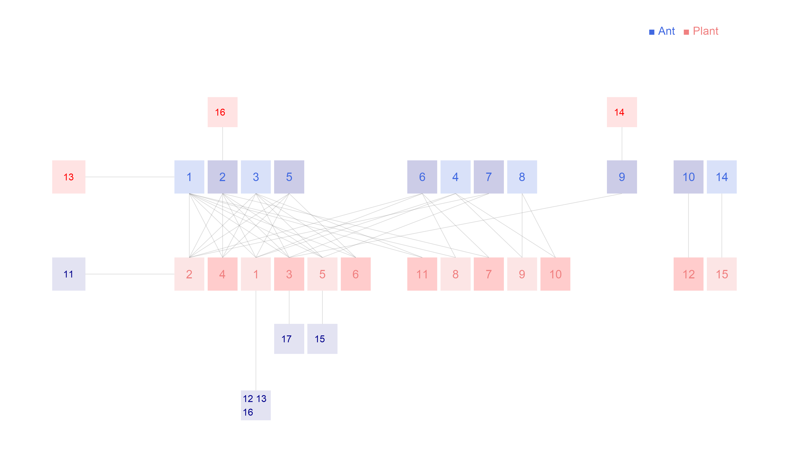

Network: dattilo2014

Ant 1 Forelius pruinosus, 2 Camponotus planatus, 3 Monomorium ebeninum, 4 Cephalotes minutus, 5 Dorymyrmex bicolor, 6 Paratrechina longicornis, 7 Crematogaster obscurata, 8 Pseudomyrmex oculatus, 9 Camponotus mucronatus, 10 Camponotus novogradensis, 11 Crematogaster crinosa, 12 Crematogaster rochai, 13 Crematogaster torosa, 14 Monomorium floricola, 15 Pseudomyrmex gracilis, 16 Pseudomyrmex pallidus, 17Solepnosis geminata
Plant
1 Opuntia sctricta, 2 Macroptilium atropupureum, 3 Mansoa hymenaea, 4 Crotolaria incana, 5 Cedrela odorata, 6 Chamaecrista chamecristoides, 7 Caesalpinia crista, 8 Canavalia rosea, 9 Petrea volubilis, 10 Prestonia mexicana, 11 Turnera ulmifolia, 12 Capparis baduca, 13 Ipomoea pres-caprae, 14 Passiflora sp, 15 Serjania sp, 16Terminalia catappa